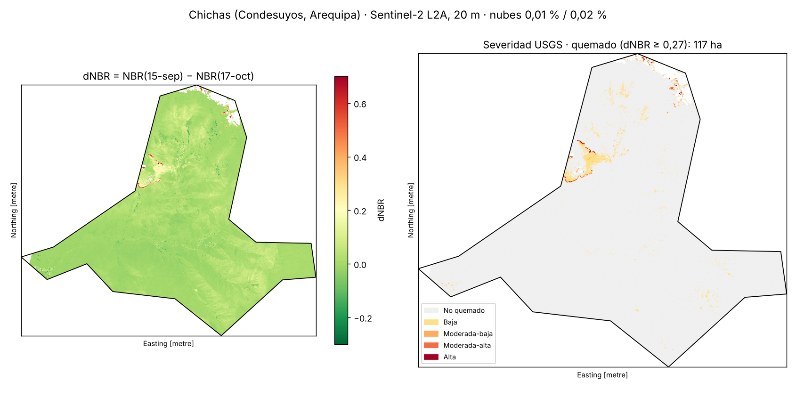
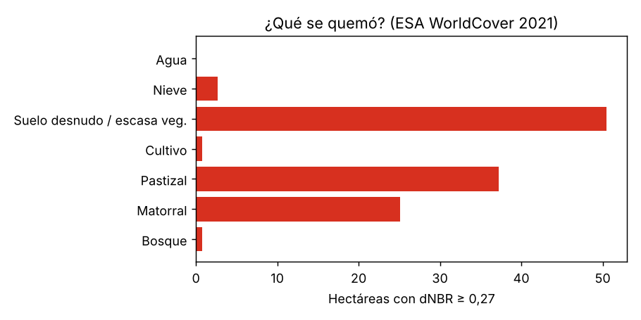

¿Cuánto se quemó en Chichas?
Condesuyos, Arequipa · Sentinel-2 L2A (20 m) · antes 15-set-2026 (0,01 % nubes) · después 17-oct-2026 (0,02 % nubes)
117 hacon dNBR ≥ 0,27 (moderado o más)
80 haquemado robusto, lejos de nieve y agua
53 %del quemado es pastizal o matorral
< 2 hade bosque y cultivo afectados

Tres hallazgos
- El área quemada es pequeña: 117 ha con dNBR ≥ 0,27 y solo 80 ha robustas, de 38 492 ha analizadas (0,2–0,3 % del distrito), en un parche al noroeste.
- Se quemó vegetación altoandina: pastizal 37 ha y matorral 25 ha. Bosque y cultivo suman menos de 2 ha.
- Un tercio del “quemado” es dudoso: 37 ha están a ≤ 60 m de nieve o lagunas, donde el deshielo imita al fuego. Sin ese control el resultado se infla ~46 %.
¿Qué se quemó?

Limitaciones
Sin validación con focos VIIRS (FIRMS no era accesible desde el entorno de trabajo). Límite distrital simplificado. Umbral USGS genérico, pensado para bosques: en puna puede subestimar fuegos leves. WorldCover es de 2021.